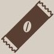
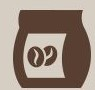
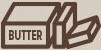
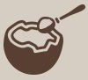
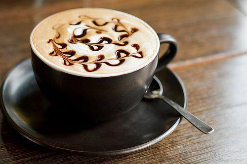
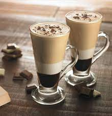
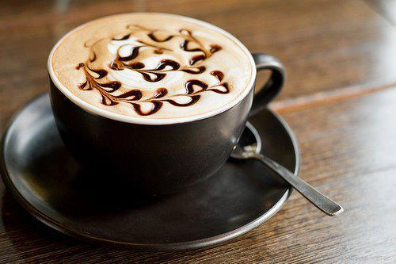
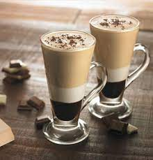

Life Begins With After Coffee

CAPPUCCINO
A cappuccino is an espresso-based coffee drink that originated in Austria with later development
taking
place in Italy, and is prepared with steamed milk foam.Variations of the drink involve the use of cream
instead of milk
ICEDCOFFEE
Iced coffee is a coffee beverage served cold. It may be prepared either by brewing coffee in the
normal way and then serving it over ice or in cold milk or by brewing the coffee cold.Pre-packaged iced
coffee is available as a grocery item in several countries, though without ice
MOCHA
A café mocha, also called mocaccino, is a chocolate-flavoured warm beverage that is a variant of a
café latte, commonly served in a glass rather than a mug. Other commonly used spellings are mochaccino and
also mochachino.
EASY WAY
To Make Your Coffee Healthier

1.Aviod Artifical
Sweeteners And
Refined Sugar
2.Aviod Artifical
Creamers

3.Use Filtered
Water and Organic
Beans
4.Add Cinnamon

5.Add Grass-fed
Butter
6.Add Collagen

7.Add Cocount
Oil
8.Add Cocoa
Are You Coffee Lovers?
Coffee is one of the world’s most popular beverages.
Thanks to its high levels of antioxidants and beneficial nutrients, it also seems to be quite healthy.
Studies show that coffee drinkers have a much lower risk of several serious diseases
Coffee can help people feel less tired and increase energy levels.Caffeine is found in almost every
commercial fat-burning supplement and -for good reason. It’s one of the few natural substances proven to
aid fat burning.The same anti-aging benefits from coffee can also be used for post-sun care.
Contact
Near Infopark Kochi
+919534372890
coffeelove143@gmail.com
Follow Us


 


